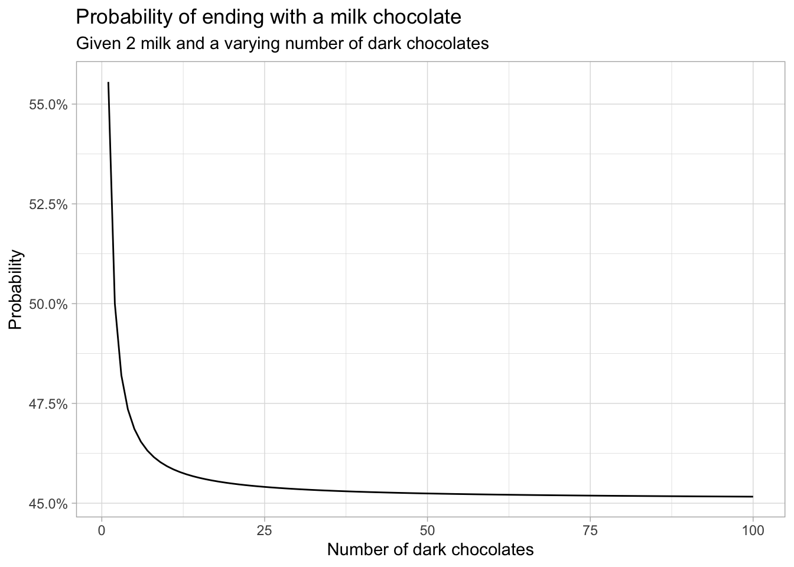
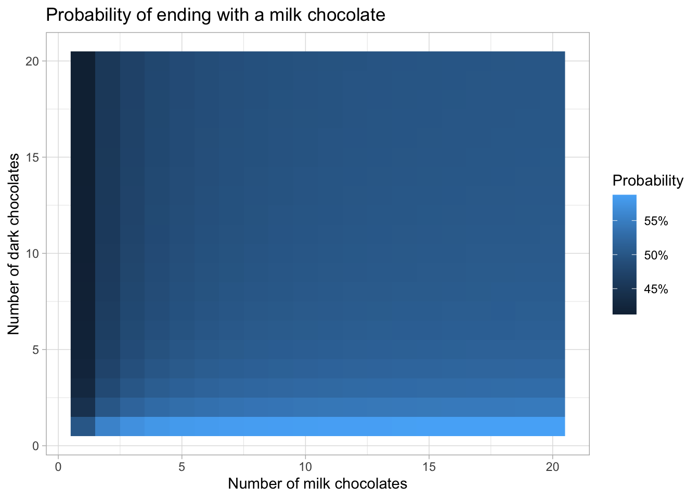

chocolates <- c(rep("m", 2), rep("d", 8))
eat_chocolates <- function() {
# shuffle the chocolates around
chocolates_left <- sample(chocolates)
# eat the first chocolate
last_taken <- chocolates_left[1]
chocolates_left <- chocolates_left[-1]
# eat the rest of the chocolates
while (length(chocolates_left) > 0) {
# take the first chocolate out of the bag
to_eat <- chocolates_left[1]
chocolates_left <- chocolates_left[-1]
# put back and shuffle if differs from previous piece
if (to_eat != last_taken) {
chocolates_left <- sample(c(to_eat, chocolates_left))
}
last_taken <- to_eat
}
last_taken
}Riddler: Can You Eat All The Chocolates?
Today’s 538 Riddler Classic is about eating chocolates:
I have 10 chocolates in a bag: Two are milk chocolate, while the other eight are dark chocolate. One at a time, I randomly pull chocolates from the bag and eat them — that is, until I pick a chocolate of the other kind. When I get to the other type of chocolate, I put it back in the bag and start drawing again with the remaining chocolates. I keep going until I have eaten all 10 chocolates.
For example, if I first pull out a dark chocolate, I will eat it. (I’ll always eat the first chocolate I pull out.) If I pull out a second dark chocolate, I will eat that as well. If the third one is milk chocolate, I will not eat it (yet), and instead place it back in the bag. Then I will start again, eating the first chocolate I pull out.
What are the chances that the last chocolate I eat is milk chocolate?
Our first approach will be a simple simulation to gauge what the answer should approximately be, before going to an analytical approach.
Added later: it turns out I misread the question. I assumed that after taking a chocolate that I could not eat, I would put it back and only eat the next one if it is of the same type. That is, however, not what’s asked: you always eat the following chocolate after you put one back, regardless of its type. I will keep my answer to the (wrong) question below for those who are interested.
Simulation in R
The following R function simulates eating one bag of chocolates and outputs what the last chocolate was.
We can now easily run, for example, 100,000 simulations and calculate the percentage in which the last chocolate was milk:
simulations <- replicate(1e5, eat_chocolates())
mean(simulations == "m")[1] 0.45907In a couple of seconds, this gives an estimate of a 46% probability of ending with a piece of milk chocolate. This is closer to 50% than I initially expected. Intuitively though, it does make sense, given the nature of the problem that the majority chocolate type will be eaten relatively quickly, since it is easier to get a ‘streak’ of those.
Running this (admittedly naive) simulation for more than, say, 1 million replications quickly becomes intractable. For a more accurate result that does run quickly, we can resort to recursion.
Recursion
The problem ca be written in a recursive form: given a number of milk and dark chocolates, we can create a set of possible next states and attach probabilities to those states. We can repeat this until we arrive at a bag of only one type of chocolate.
In order to do that, let’s first introduce some notation. Let P(m, d, x) be the probability of ending with a milk chocolate given that we currently have a bag of m milk and d dark chocolates and that the last chocolate we ate was of type x\in\{\text{milk}, \text{dark}\}. Denote by x^c the chocolate type that is not x. We then know the trivial cases P(m, 0, x) = 1 and P(0,d,x)=0; you can’t “fail” if you only have milk left, and you can’t “succeed” if you only have dark chocolates left.
Moreover, the probability of ending with a milk chocolate given a certain distribution of chocolates and a previous pick equals the probability of ending with a dark chocolate given that we have switched all dark and milk chocolates around. In mathematical terms, P(m,d|x) = 1-P(d,m|x^c).
Now, given a state (m,d, \text{milk}), you will pick a milk chocolate with probability \frac{m}{m+d}, resulting in a state of (m-1, d, \text{milk}), or you will pick dark with probability \frac{d}{m+d}, resulting in (m, d, \text{dark}). In other words, given m,d>0, P(m, d, \text{milk}) = \frac{m}{m+d}\cdot P(m-1,d,\text{milk})\,+\,\frac{d}{m+d}\cdot P(m,d,\text{dark}).
We can now immediately see a problem with programming this recursion as it is: the second term did not decrease the total number of chocolates. Were we to do another step, we could again arrive at the situation we started with, thus resulting in an endless loop. In other words, theoretically we could keep alternately picking \text{milk} and \text{dark} chocolates and never finish the whole bag.
We need to go deeper.
Let’s do another recursion step by expanding the right-most term in the above equation:
P(m,d,\text{dark}) = \frac{m}{m+d}\cdot P(m,d,\text{milk})\,+\,\frac{d}{m+d}\cdot P(m,d-1,\text{dark}).
Filling this into the first equation,
P(m, d, \text{milk}) = \frac{m}{m+d}\cdot P(m-1,d,\text{milk})\,+\,\frac{d}{m+d}\cdot \left(\frac{m}{m+d}\cdot P(m,d,\text{milk})\,+\,\frac{d}{m+d}\cdot P(m,d-1,\text{dark})\right),
which we can rearrange into
P(m, d, \text{milk}) - \frac{md}{(m+d)^2}\cdot P(m,d,\text{milk}) = \frac{m}{m+d}\cdot P(m-1,d,\text{milk})\,+\,\frac{d^2}{(m+d)^2}\cdot P(m,d-1,\text{dark}),
or
\frac{(m+d)^2-md}{(m+d)^2}\cdot P(m,d,\text{milk}) = \frac{m}{m+d}\cdot P(m-1,d,\text{milk})\,+\,\frac{d^2}{(m+d)^2}\cdot P(m,d-1,\text{dark}),
which gives
P(m,d,\text{milk}) = \frac{m^2+md}{m^2+d^2+md}\cdot P(m-1,d,\text{milk})\,+\,\frac{d^2}{m^2+d^2+md}\cdot P(m,d-1,\text{dark}).
Now, by magic, this recursion does strictly decrease the total number of chocolates in the bag, thus making a program feasible. Together with the relationship P(m,d,\text{dark})=1-P(d,m,\text{milk}), we can calculate our quantity of interest, which is the probability of ending with a milk chocolate given a starting bag and no previous chocolates eaten:
P(m,d)=\frac{m}{m+d}\cdot P(m-1,d,\text{milk})\,+\,\frac{d}{m+d}\cdot P(m,d-1,\text{dark}).
In R code, this recursion can be programmed as follows.
P <- function(m, d, previous = "") {
if (m == 0) {
return(0)
} else if (d == 0) {
return(1)
}
if (previous == "") {
m/(m+d)*P(m-1, d, "milk") + d/(m+d)*P(m, d-1, "dark")
} else if (previous == "milk") {
(m^2+m*d)/(m^2+d^2+m*d)*P(m-1, d, "milk") + (d^2)/(m^2+d^2+m*d)*P(m, d-1, "dark")
} else if (previous == "dark") {
1 - P(d, m, "milk")
}
}This allows us to calculate some simple examples,
P(2,0)[1] 1P(0,2)[1] 0P(1,1)[1] 0.5but also the actual quantity of interest
P(2,8)[1] 0.4615372within a second. This agrees with the outcome of our simulation: the probability of ending with a milk chocolate is about 46.15%.
Other starting points
Now that we have code that runs quickly, we can explore the probabilities for other mixes of chocolates.
Say we start with 2 milk chocolates, but vary the number of dark chocolates.
library(tidyverse)Warning: package 'dplyr' was built under R version 4.2.3theme_set(theme_light())
simulations <- tibble(m = 2, d = 1:100) %>%
rowwise() %>%
mutate(p = P(m, d))
ggplot(simulations, aes(d, p)) +
geom_line() +
scale_y_continuous(labels = scales::percent_format()) +
labs(title = "Probability of ending with a milk chocolate",
subtitle = "Given 2 milk and a varying number of dark chocolates",
x = "Number of dark chocolates",
y = "Probability")
At first, the probability of success drops quickly, but at some point the streaks of dark chocolates will be so common that adding more dark chocolates does not decrease this probability significantly.
We can do the same thing in two dimensions by also varying the number of milk chocolates. Now, memoization comes in handy, since otherwise we calculate the same probability many times. The function P_mem calculates P but checks whether a certain probability has already been calculated in the list of matrices mem.
n_max <- 20
mem <- list(milk = matrix(nrow = n_max, ncol = n_max),
dark = matrix(nrow = n_max, ncol = n_max))
P_mem <- function(m, d, previous = "") {
if (m == 0) {
return(0)
} else if (d == 0) {
return(1)
}
if (previous != "" && !is.na(mem[[previous]][m, d])) {
return(mem[[previous]][m, d])
}
if (previous == "") {
res <- m/(m+d)*P_mem(m-1, d, "milk") + d/(m+d)*P_mem(m, d-1, "dark")
} else if (previous == "milk") {
res <- (m^2+m*d)/(m^2+d^2+m*d)*P_mem(m-1, d, "milk") + (d^2)/(m^2+d^2+m*d)*P_mem(m, d-1, "dark")
mem[[previous]][m, d] <<- res
} else if (previous == "dark") {
res <- 1 - P_mem(d, m, "milk")
mem[[previous]][m, d] <<- res
}
res
}
simulations <- crossing(m = 1:n_max, d = 1:n_max) %>%
rowwise() %>%
mutate(p = P_mem(m, d))
ggplot(simulations, aes(m, d, fill = p)) +
geom_raster() +
scale_fill_continuous(labels = scales::percent_format()) +
labs(title = "Probability of ending with a milk chocolate",
x = "Number of milk chocolates",
y = "Number of dark chocolates",
fill = "Probability")
This graph shows that the more chocolates there are in the bag, the smaller the differences between different mixes become.